Tài liệu dành cho anh/chị bán hàng, marketing, chăm sóc khách.
Viết theo kiểu: muốn làm gì → bấm đâu → làm thế nào.
| Việc | Mở link này |
|---|---|
| Xem website khách xem | https://vinfast3scamau.com |
| Vào trang quản trị (CMS) | https://cms.vinfast3scamau.com/admin/login |
CMS = chỗ sửa nội dung. Website = chỗ khách xem.
Sửa xong trong CMS → mở website kiểm tra. Nếu chưa thấy đổi → xem mục [Website chưa cập nhật](#website-chưa-cập-nhật).
Không vào được → kiểm tra đúng link, đúng email/mật khẩu. Vẫn lỗi → báo người cấp tài khoản.
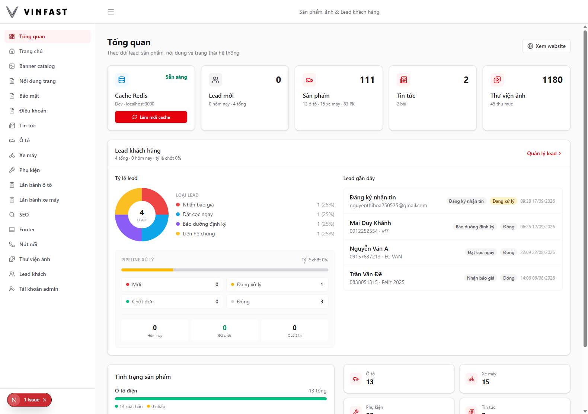
Ai nên dùng mục nào?
| Anh/chị làm việc | Vào các mục |
|---|---|
| Sale / CSKH | Lead khách |
| Marketing nội dung | Trang chủ, Tin tức, Ô tô/Xe máy/Phụ kiện, Banner, Thư viện ảnh |
| Phụ trách kỹ thuật / admin | SEO, Redirects, Tài khoản admin, Làm mới cache |
| Muốn… | Vào menu | Làm nhanh |
|---|---|---|
| Đổi giá / gắn nhãn “Ưu đãi” | Ô tô hoặc Xe máy | Sửa trên thẻ xe → Lưu thẻ |
| Đổi giá / còn hàng phụ kiện | Phụ kiện | Sửa trên thẻ → Lưu thẻ |
| Đăng bài tin | Tin tức | Viết bài mới → Xuất bản |
| Gọi khách vừa form | Lead khách | Bấm Gọi → đổi trạng thái |
| Đổi banner trang chủ | Trang chủ | Bấm vào banner → đổi ảnh → Lưu thay đổi |
| Đổi hotline góc phải web | Nút nổi (+ SEO nếu cần) | Sửa link → Lưu |
| Thêm xe mới | Ô tô → Thêm ô tô | Chọn xe mẫu + đặt tên → mục 7 |
| Copy xe gần giống | Trang chi tiết xe → Nhân bản | Mục 8 |
Sửa trong CMS → kiểm tra đúng trang này trên https://vinfast3scamau.com
| Trong CMS (menu trái) | Trên website |
|---|---|
| Trang chủ | https://vinfast3scamau.com |
| Banner catalog → tab Ô tô | https://vinfast3scamau.com/oto |
| Banner catalog → tab Xe máy | https://vinfast3scamau.com/xe-may-dien |
| Banner catalog → tab Phụ kiện | https://vinfast3scamau.com/phu-kien |
| Ô tô (từng xe) | https://vinfast3scamau.com/oto/… |
| Xe máy (từng xe) | https://vinfast3scamau.com/xe-may-dien/… |
| Phụ kiện (từng món) | https://vinfast3scamau.com/phu-kien/… |
| Tin tức | https://vinfast3scamau.com/tin-tuc |
| Nội dung trang → Giới thiệu | https://vinfast3scamau.com/gioi-thieu |
| Nội dung trang → Hậu mãi | https://vinfast3scamau.com/dich-vu-hau-mai |
| Nội dung trang → Pin & sạc | https://vinfast3scamau.com/pin-va-tram-sac |
| Nội dung trang → Lưu trữ NL | https://vinfast3scamau.com/luu-tru-nang-luong |
| Bảo mật | trang chính sách bảo mật |
| Điều khoản | trang điều khoản |
| Footer / Nút nổi | hiện ở hầu hết mọi trang |
| Lead khách | không phải trang web — hộp thư form khách gửi |
Trong CMS đôi khi thấy chữ /preview — đó là bản xem để sửa, không gửi khách. Nút Xem trên web → / Website mới là bản khách xem.
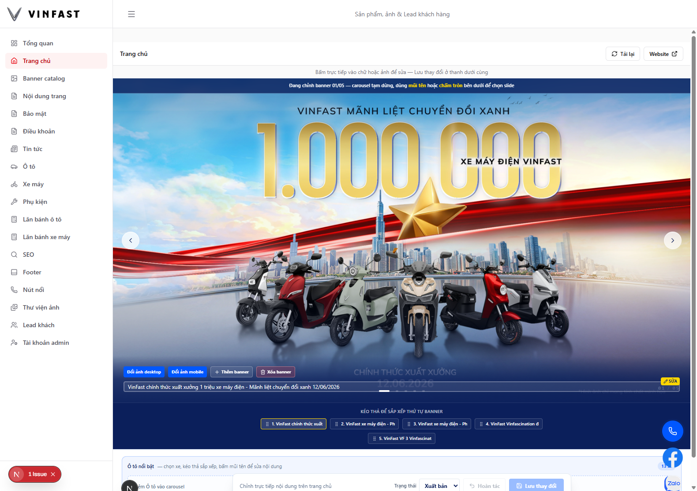
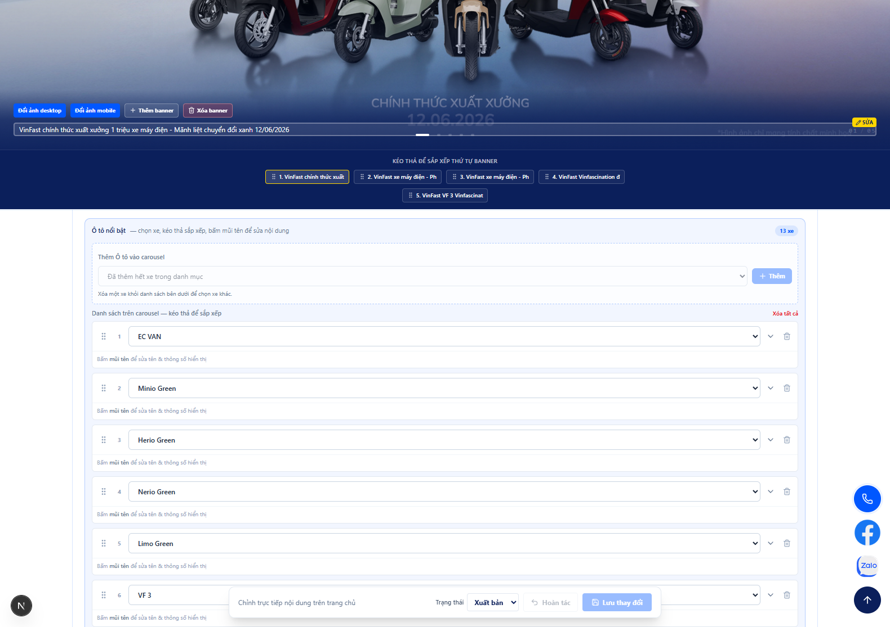
Ý nghĩa nút:
Ba menu Ô tô, Xe máy, Phụ kiện thao tác gần giống nhau.
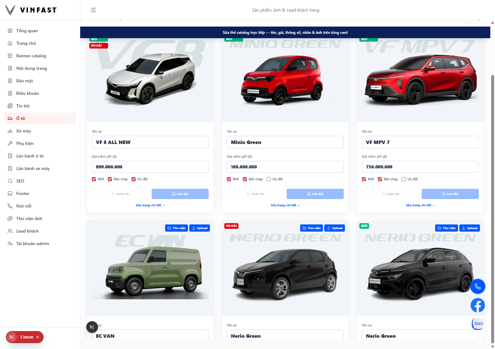
#### Cách A — Đổi nhanh giá / tên / nhãn (hay dùng)
Xe máy:
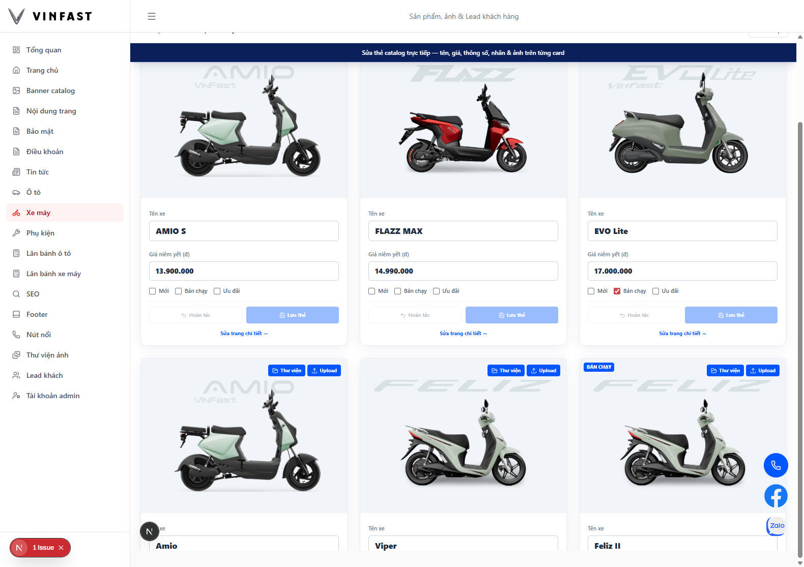
#### Cách B — Sửa cả trang chi tiết xe (nội dung dài)
(hoặc mở Quản lý ô tô → Mở danh sách → Sửa).
| Tab | Dùng để |
|---|---|
| Nội dung | Sửa chữ, ảnh, gallery, màu… ngay trên trang xe |
| Thông tin | Tên, đường dẫn URL, giá từ, trạng thái xuất bản |
| SEO | Tiêu đề / mô tả Google |
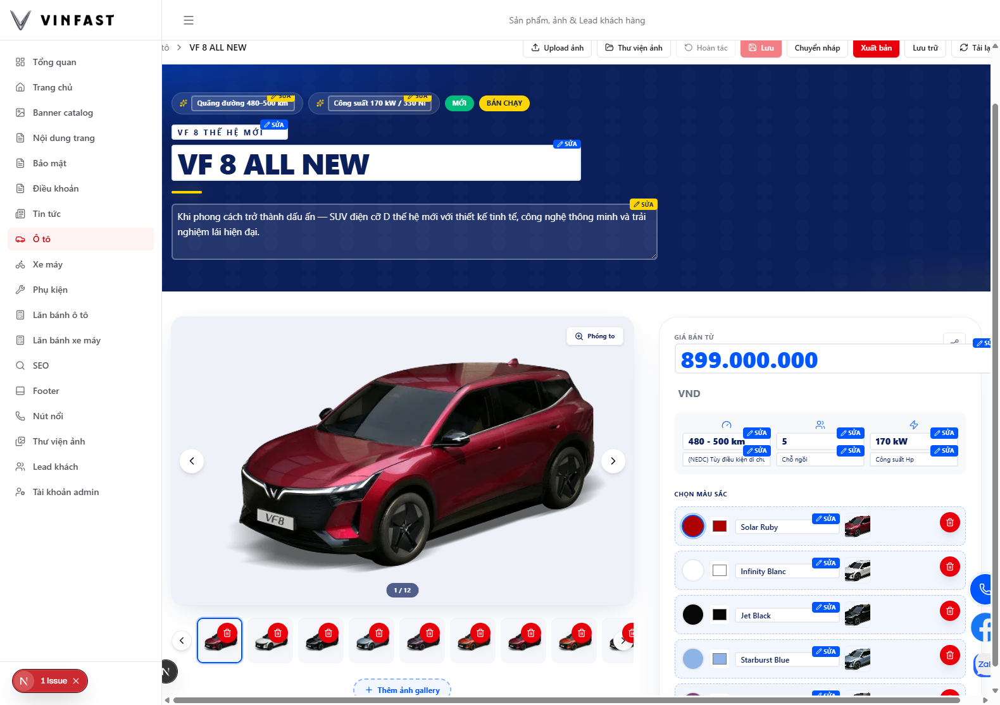
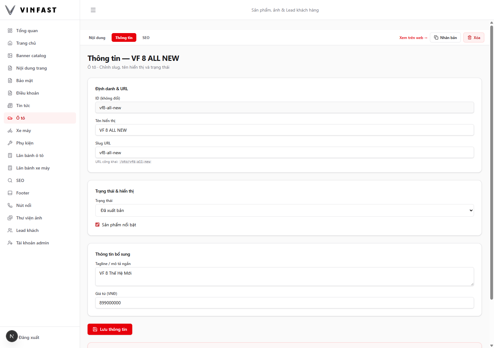
#### Đổi thứ tự xe trên danh mục
Vào menu Phụ kiện — vẫn có lưới thẻ + Lưu thẻ, nhưng trên mỗi thẻ còn sửa thêm:
| Ô trên thẻ | Ý nghĩa |
|---|---|
| Tên sản phẩm | Tên hiện trên web |
| Mô tả ngắn | Đoạn mô tả dưới tên |
| Giá bán ưu đãi | Giá hiện khách |
| Badge | Chữ nhỏ trên ảnh (nếu có) |
| Danh mục | Nội thất / Ngoại thất / Sạc… |
| Dòng xe | Xe nào dùng được (ví dụ VF 8) |
| Còn hàng | Tắt = hiện hết hàng |
Sau khi sửa → Lưu thẻ.
Muốn sửa sâu hơn → Sửa trang chi tiết → (giống ô tô: tab Nội dung / Thông tin / SEO).
Thêm phụ kiện mới: Phụ kiện → Thêm phụ kiện → chọn mẫu + tên → chọn xe tương thích (để ảnh đúng thư mục) → tạo nháp → upload ảnh → xuất bản (xem mục 7).
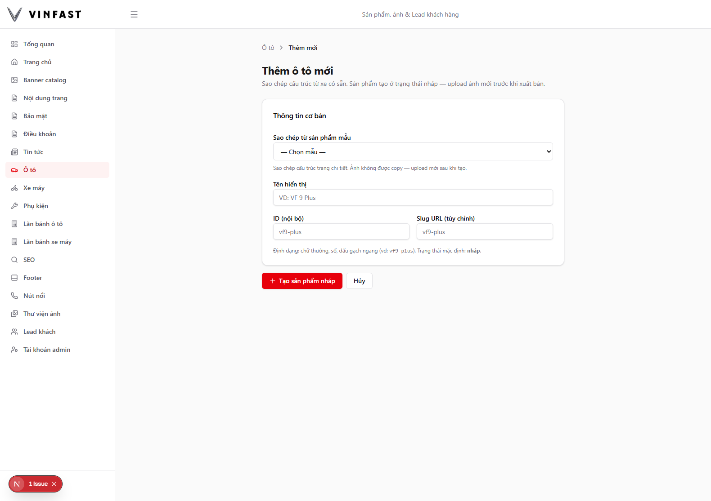
Hệ thống bắt buộc chọn một xe mẫu để copy khung trang. Ảnh không copy theo — phải upload sau.
Làm lần lượt:
VF 9 Plus). - Tab Thông tin: giá từ → Lưu thông tin
- Upload ảnh (đại diện + gallery)
- Tab Nội dung: chỉnh chữ → Lưu
- Tab SEO: điền title/mô tả → Lưu SEO
Phụ kiện: nhớ chọn xe tương thích lúc tạo. Không chọn → ảnh vào thư mục phụ kiện chung.
Dùng khi ra phiên bản mới gần giống xe đang có (đỡ dựng lại từ đầu).
Nhân bản nhanh hơn khi chỉ đổi vài chỗ so với tạo mới hoàn toàn.
| Muốn | Làm gì | Ghi chú |
|---|---|---|
| Ẩn tạm, còn lấy lại sau | Trang chi tiết → Chuyển nháp hoặc Lưu trữ | An toàn |
| Xóa hẳn | Nút Xóa → xác nhận | Không hoàn tác |
Khuyến nghị: chưa chắc thì Nháp / Lưu trữ, đừng xóa.
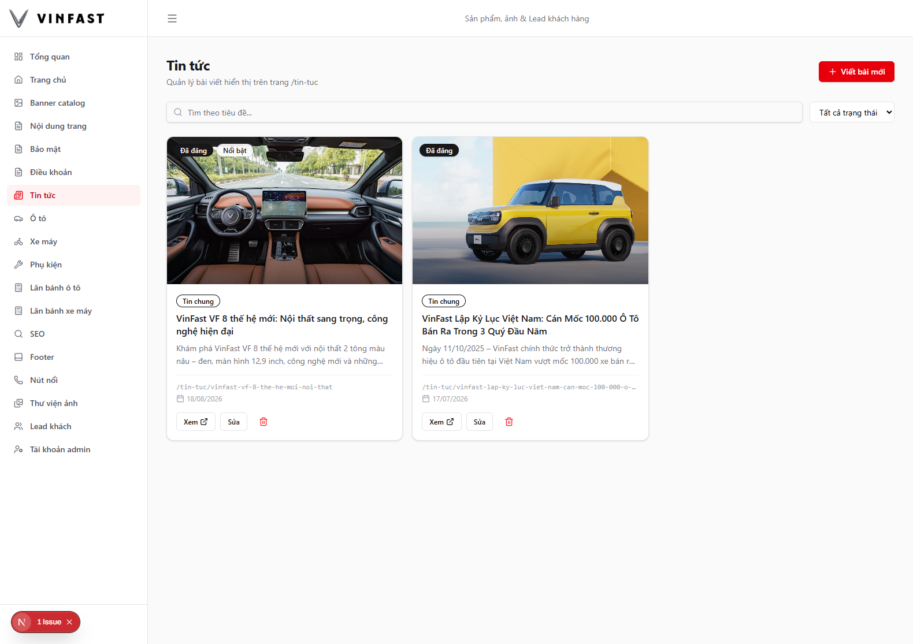
- Lưu nháp = chưa hiện web
- Xuất bản = hiện ngay trên https://vinfast3scamau.com/tin-tuc
- Lên lịch = đăng đúng giờ đã chọn
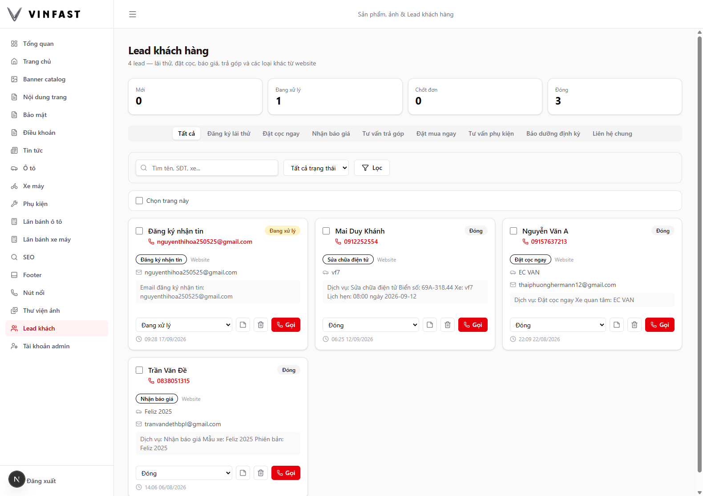
Khách gửi form trên web (báo giá, đặt cọc, lái thử…) sẽ vào đây.
Mỗi ngày nên:
- Đang xử lý → đang tư vấn
- Chốt đơn → đã chốt
- Đóng → không còn nhu cầu
Có thể lọc theo loại form (báo giá, đặt cọc…) và tìm theo tên / SĐT.
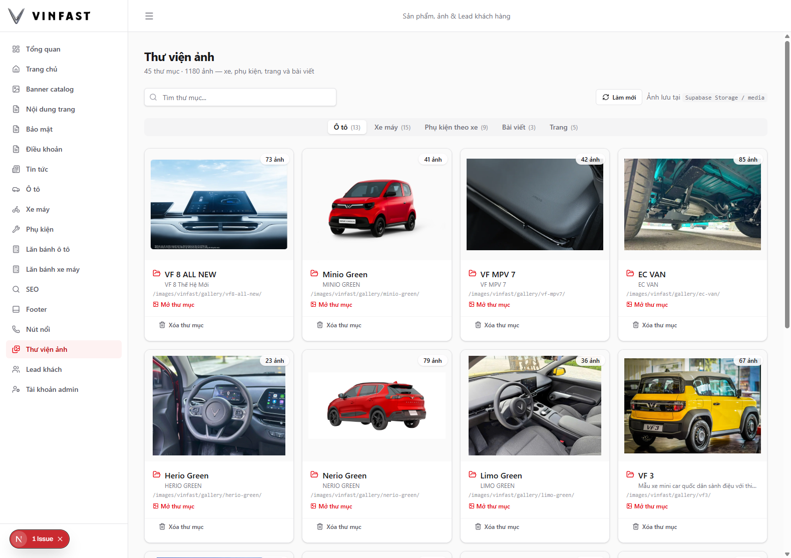
Cẩn thận: đừng Xóa thư mục nếu chưa chắc ảnh còn đang dùng trên web.
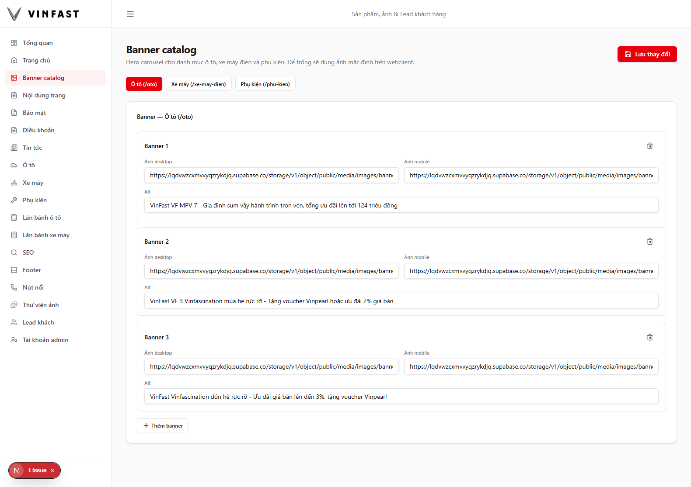
Banner lớn trên trang danh mục ô tô / xe máy / phụ kiện (xem bảng mục 4).
Nên lấy URL ảnh từ Thư viện ảnh.
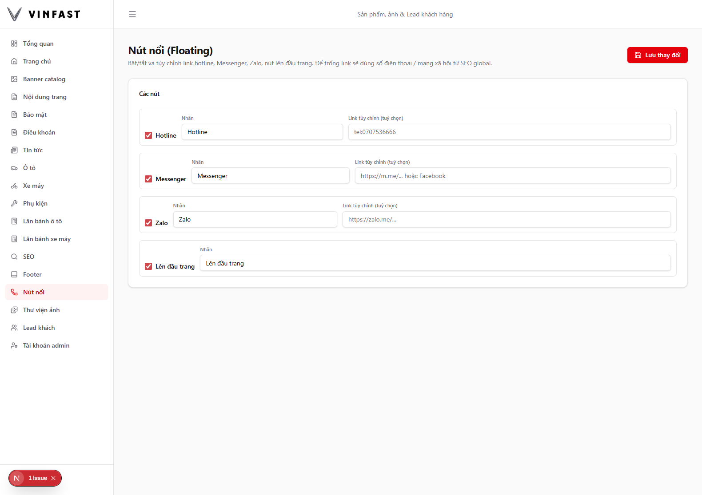
Các nút góc phải website (gọi, Messenger, Zalo, lên đầu trang).
Đổi hotline “chính thức” của đại lý: sửa thêm ở SEO → Cài đặt chung (để Footer / thông tin chung khớp).
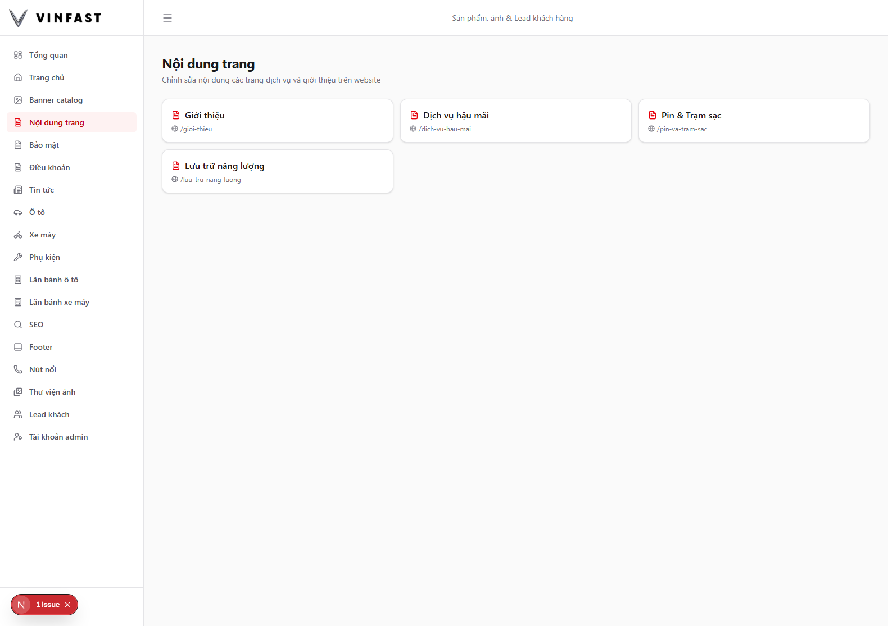
Bấm thẻ trang → sửa như trang chủ (bấm chữ/ảnh) → Lưu.
Link web tương ứng xem mục 4.
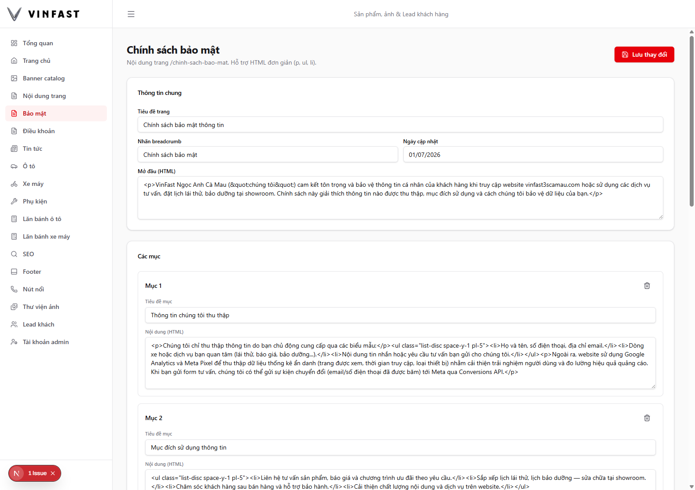
Sửa tiêu đề + các mục → Lưu thay đổi.
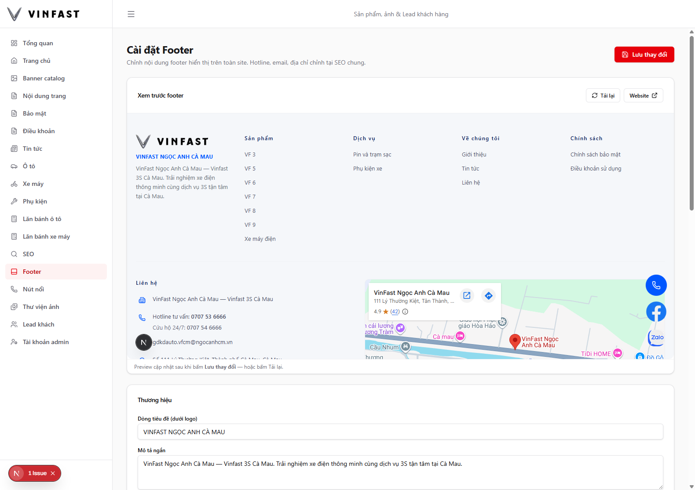
Sửa chữ thương hiệu + link các cột → Lưu thay đổi.
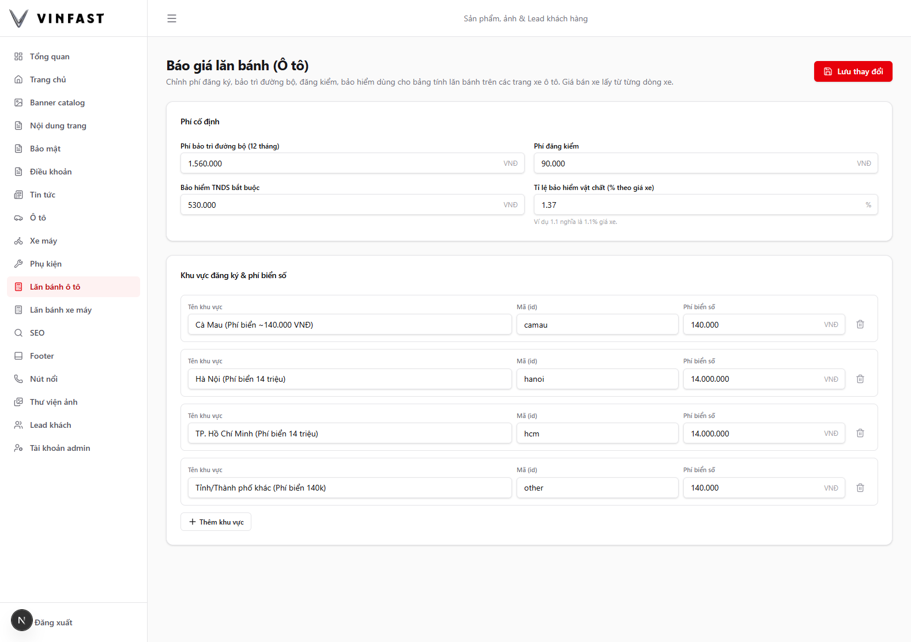
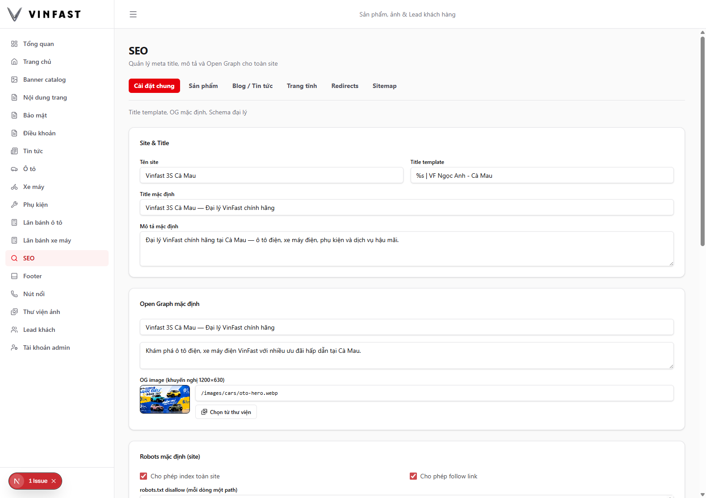
| Tab | Khi nào dùng |
|---|---|
| Cài đặt chung | Tên site, mô tả mặc định, hotline chung |
| Sản phẩm / Blog / Trang tĩnh | SEO từng trang |
| Redirects | Đổi link cũ → link mới (nên nhờ kỹ thuật) |
| Sitemap | Danh sách trang Google đọc |
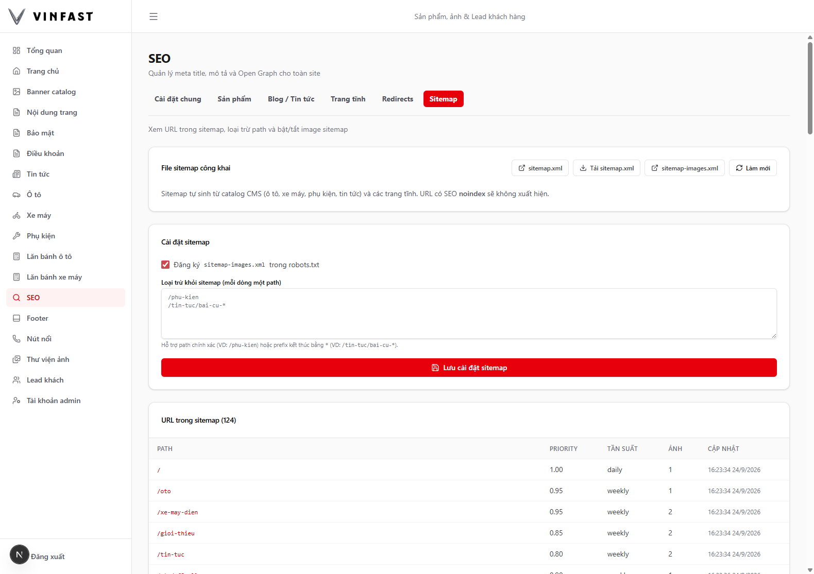
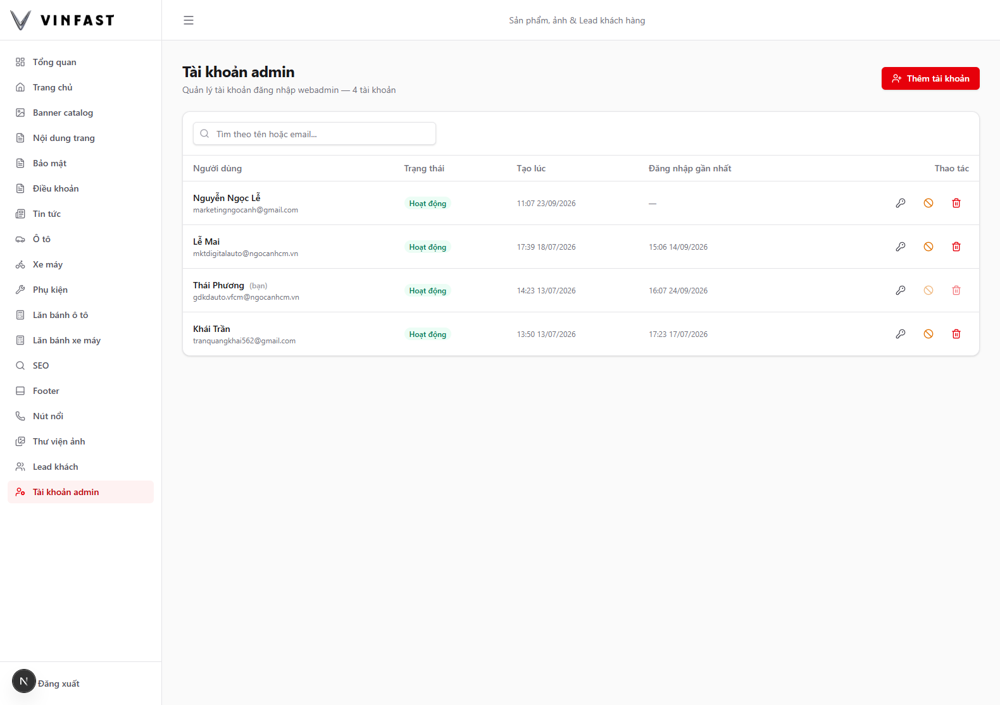
Thêm người dùng, đổi mật khẩu, chặn / xóa tài khoản.
Không tự xóa hoặc chặn tài khoản đang đăng nhập của mình.
Đã Lưu trong CMS nhưng https://vinfast3scamau.com vẫn cũ:
Không cần bấm mỗi lần sửa nhỏ nếu web đã hiện đúng.
Nhờ người phụ trách kỹ thuật khi:
CMS (cms.vinfast3scamau.com) = chỗ sửa · Web (vinfast3scamau.com) = chỗ khách xem · Sửa xong nhớ Lưu · Không thấy đổi thì Làm mới cache.
| File | Dùng |
|---|---|
| File Word / PDF cùng thư mục này | In hoặc gửi Zalo / email |
QUY-TRINH-NHANH.md | Giấy nháp 1 trang |
*Cập nhật 09/2026 — VinFast Ngọc Anh Cà Mau.*
Cập nhật theo bản admin hiện tại (tháng 09/2026).